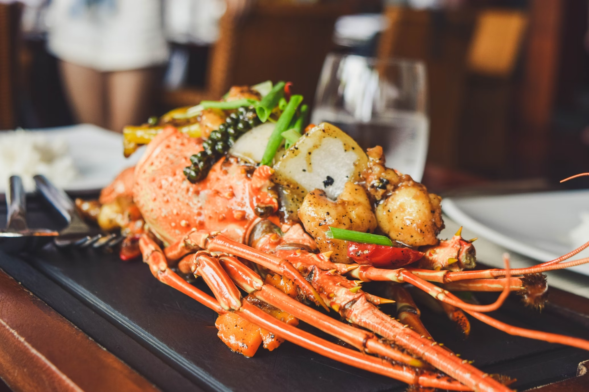

Homard en chaud-froid

Faites cuire les homards dans de l'eau bouillante avec du thym, du laurier, du sel et du poivre de Cayenne.
Laissez cuire 20 minutes. Egouttez-les et laissez-les refroidir
Découpez les coffres des homards dans le sens de la longueur
Mélangez la mayonnaise avec le cognac, le corail et la ciboulette ciselée.